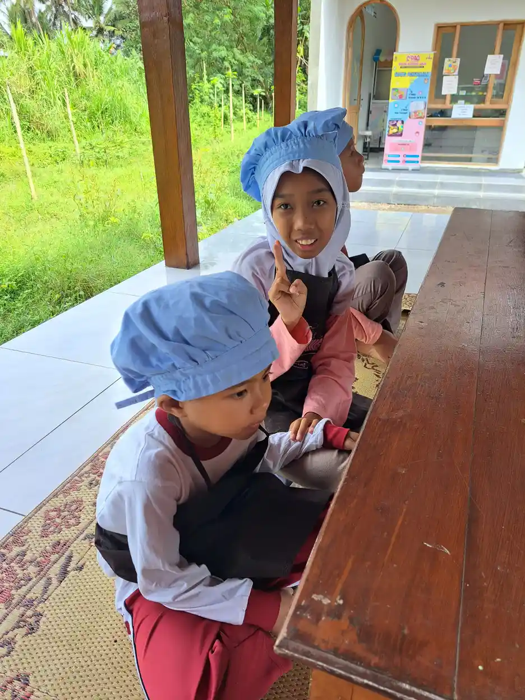
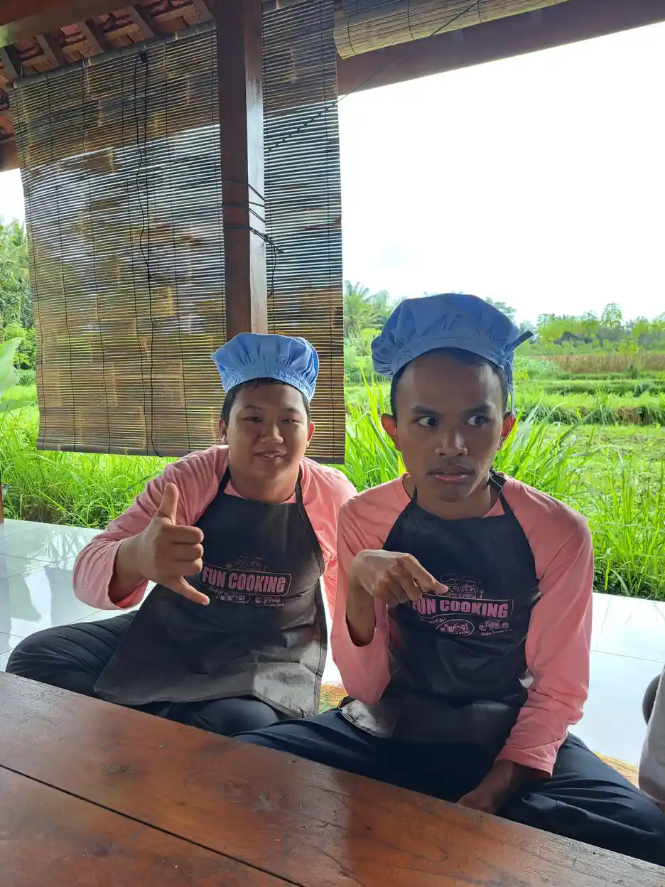

GPK adalah singkatan dari Guru Pembimbing Khusus, yaitu tenaga pendidik profesional yang memiliki keahlian khusus dalam mendampingi anak berkebutuhan khusus (ABK) di sekolah penyelenggara pendidikan inklusi. Kehadiran GPK menjadi salah satu pilar utama keberhasilan sistem pendidikan inklusi di Indonesia, karena mereka menjembatani kebutuhan belajar ABK dengan lingkungan sekolah reguler yang lebih luas.
Di Indonesia, pendidikan inklusi terus berkembang seiring dengan meningkatnya kesadaran masyarakat akan hak setiap anak untuk mendapatkan pendidikan yang layak. Namun, tanpa adanya GPK yang kompeten, sekolah inklusi sering kali kesulitan memberikan layanan optimal bagi ABK. Guru kelas reguler, meskipun penuh dedikasi, tidak selalu memiliki keahlian untuk menangani keragaman kebutuhan belajar siswa berkebutuhan khusus.
Di Yayasan Ukhuwah Kaffah Amanatullah (YUKA), kami memahami betul betapa pentingnya peran guru pembimbing khusus. Melalui Sekolah Inklusi Taruna Imani di Sleman, Yogyakarta, kami bekerja sama dengan GPK untuk memastikan setiap anak, termasuk mereka yang memiliki autisme, ADHD, dan berbagai kebutuhan khusus lainnya, mendapatkan pendampingan yang tepat dan penuh kasih sayang.
Artikel ini akan membahas secara lengkap tentang GPK: mulai dari pengertian, dasar hukum, tugas dan tanggung jawab, kualifikasi yang dibutuhkan, hingga tantangan yang dihadapi di lapangan. Kami berharap artikel ini dapat menjadi panduan bermanfaat bagi orang tua, guru, dan siapa pun yang peduli terhadap pendidikan inklusi di Indonesia.
Daftar Isi
Apa Itu GPK (Guru Pembimbing Khusus)?
GPK adalah guru yang secara khusus ditugaskan untuk memberikan bimbingan dan pendampingan kepada peserta didik berkebutuhan khusus di sekolah penyelenggara pendidikan inklusi. Dalam konteks pendidikan inklusi, GPK berfungsi sebagai jembatan antara kebutuhan khusus siswa dan sistem pembelajaran reguler yang berlaku di sekolah.
Secara lebih spesifik, guru pembimbing khusus adalah tenaga pendidik yang memiliki latar belakang pendidikan luar biasa (PLB) atau telah mendapatkan pelatihan khusus di bidang pendidikan inklusi. Mereka bukan sekadar guru pendamping biasa, melainkan profesional yang memahami karakteristik berbagai jenis kebutuhan khusus, mampu melakukan asesmen, dan terampil menyusun program pembelajaran yang disesuaikan dengan kemampuan serta potensi masing-masing anak.
Dalam praktiknya, GPK pendidikan inklusi bekerja dengan cara yang berbeda dari guru kelas reguler. Jika guru kelas bertanggung jawab atas pembelajaran seluruh siswa di kelasnya, maka GPK memiliki fokus khusus pada siswa-siswa berkebutuhan khusus. GPK melakukan identifikasi, asesmen, dan penyusunan Program Pembelajaran Individual (PPI) yang menjadi pedoman dalam mendampingi setiap ABK.
Mengapa GPK Penting dalam Pendidikan Inklusi?
Kehadiran GPK di sekolah inklusi bukan sekadar pelengkap, melainkan kebutuhan mendasar. Tanpa GPK, guru kelas reguler akan kewalahan menangani keragaman kebutuhan siswa, terutama ketika di satu kelas terdapat beberapa ABK dengan jenis kebutuhan yang berbeda-beda. GPK membantu menciptakan lingkungan belajar yang akomodatif dan ramah bagi semua siswa.
Selain itu, GPK juga berperan sebagai konsultan bagi guru-guru kelas reguler. Mereka memberikan saran tentang strategi pembelajaran, modifikasi kurikulum, dan cara mengelola perilaku siswa berkebutuhan khusus. Dengan demikian, kehadiran GPK tidak hanya bermanfaat bagi ABK, tetapi juga meningkatkan kualitas pembelajaran secara keseluruhan di sekolah inklusi.
Di tingkat yang lebih luas, GPK juga menjadi agen perubahan dalam membangun kesadaran dan penerimaan masyarakat sekolah terhadap keberagaman. Mereka membantu mengedukasi siswa reguler, guru, dan orang tua tentang pentingnya menghargai perbedaan dan mendukung teman-teman mereka yang berkebutuhan khusus.
Dasar Hukum dan Kebijakan GPK di Indonesia
Keberadaan GPK di sekolah inklusi tidak muncul begitu saja. Ada sejumlah landasan hukum dan kebijakan yang mendasari peran serta kebutuhan akan guru pembimbing khusus dalam sistem pendidikan nasional. Memahami dasar hukum ini penting agar kita dapat mengetahui hak-hak ABK dan kewajiban pemerintah dalam menyediakan layanan pendidikan yang inklusif.
Permendiknas No. 70 Tahun 2009 tentang Pendidikan Inklusif
Peraturan Menteri Pendidikan Nasional No. 70 Tahun 2009 tentang Pendidikan Inklusif bagi Peserta Didik yang Memiliki Kelainan dan Memiliki Potensi Kecerdasan dan/atau Bakat Istimewa merupakan salah satu dasar hukum utama penyelenggaraan pendidikan inklusi di Indonesia. Dalam peraturan ini disebutkan bahwa setiap sekolah yang menyelenggarakan pendidikan inklusi wajib menyediakan guru pembimbing khusus.
Permendiknas ini menegaskan bahwa pemerintah kabupaten/kota bertanggung jawab menyediakan paling sedikit satu orang GPK pada satuan pendidikan yang ditunjuk sebagai penyelenggara pendidikan inklusi. GPK dapat berasal dari guru Sekolah Luar Biasa (SLB) yang ditugaskan di sekolah inklusi, atau guru reguler yang telah mendapatkan pelatihan pendidikan khusus.
PP No. 13 Tahun 2020 tentang Akomodasi yang Layak
Peraturan Pemerintah No. 13 Tahun 2020 tentang Akomodasi yang Layak untuk Peserta Didik Penyandang Disabilitas memperkuat kedudukan GPK dalam sistem pendidikan nasional. PP ini menekankan bahwa peserta didik penyandang disabilitas berhak mendapatkan akomodasi yang layak dalam proses pembelajaran, dan GPK menjadi salah satu komponen penting dalam penyediaan akomodasi tersebut.
PP ini mengatur bahwa akomodasi yang layak mencakup penyesuaian kurikulum, metode pembelajaran, media dan sumber belajar, sarana dan prasarana, serta sistem penilaian. GPK memiliki peran sentral dalam merancang dan mengimplementasikan semua bentuk akomodasi ini agar sesuai dengan kebutuhan masing-masing peserta didik berkebutuhan khusus.
Peraturan Gubernur DIY tentang Pendidikan Inklusi
Di tingkat daerah, Daerah Istimewa Yogyakarta (DIY) memiliki komitmen kuat terhadap pendidikan inklusi. Peraturan Gubernur DIY tentang Pendidikan Inklusi mengatur secara lebih spesifik tentang penyelenggaraan pendidikan inklusi di wilayah DIY, termasuk peran dan kebutuhan GPK di setiap sekolah inklusi.
Yogyakarta dikenal sebagai salah satu provinsi yang paling progresif dalam penyelenggaraan pendidikan inklusi. Kebijakan daerah ini mendorong setiap kabupaten/kota di DIY untuk memastikan ketersediaan GPK yang memadai, memberikan pelatihan berkelanjutan, dan menciptakan sistem dukungan yang komprehensif bagi sekolah-sekolah penyelenggara pendidikan inklusi.
Catatan Penting
Meskipun regulasi tentang GPK sudah cukup lengkap, implementasi di lapangan masih menghadapi berbagai tantangan. Banyak sekolah inklusi yang belum memiliki GPK atau hanya memiliki GPK dengan status tidak tetap. Oleh karena itu, peran masyarakat dan organisasi seperti YUKA sangat penting dalam mendukung terwujudnya pendidikan inklusi yang berkualitas.

Tugas dan Tanggung Jawab GPK
Tugas GPK sangat beragam dan mencakup berbagai aspek penyelenggaraan pendidikan inklusi. Seorang guru pembimbing khusus tidak hanya bertugas mendampingi ABK di dalam kelas, tetapi juga menjalankan peran strategis dalam perencanaan, pelaksanaan, dan evaluasi program pendidikan inklusi secara keseluruhan. Berikut adalah rincian tugas dan tanggung jawab utama GPK.
1. Identifikasi dan Asesmen Peserta Didik Berkebutuhan Khusus
Tugas pertama dan paling mendasar dari seorang GPK adalah melakukan identifikasi dan asesmen terhadap peserta didik yang diduga memiliki kebutuhan khusus. Proses identifikasi dilakukan melalui observasi, wawancara dengan orang tua, dan pengumpulan data dari berbagai sumber. Setelah itu, GPK melakukan asesmen yang lebih mendalam untuk mengetahui jenis kebutuhan khusus, tingkat kemampuan, potensi, dan hambatan belajar yang dimiliki anak.
Asesmen yang dilakukan GPK bersifat holistik, tidak hanya mencakup aspek akademik tetapi juga aspek sosial-emosional, perilaku, komunikasi, dan kemandirian. Hasil asesmen ini menjadi dasar untuk menyusun program pembelajaran yang tepat bagi setiap ABK.
2. Penyusunan Program Pembelajaran Individual (PPI)
Berdasarkan hasil asesmen, GPK menyusun Program Pembelajaran Individual (PPI) untuk setiap ABK yang didampinginya. PPI adalah dokumen perencanaan pembelajaran yang berisi tujuan pembelajaran jangka pendek dan jangka panjang, strategi pembelajaran yang akan digunakan, modifikasi kurikulum yang diperlukan, serta indikator keberhasilan yang akan diukur.
Penyusunan PPI bukan dilakukan sendiri oleh GPK, melainkan melalui kolaborasi dengan guru kelas, orang tua, dan jika memungkinkan, tenaga profesional lain seperti psikolog atau terapis. PPI disusun secara fleksibel dan dapat direvisi sesuai dengan perkembangan anak. Hal ini menjadikan PPI sebagai dokumen hidup yang terus berkembang mengikuti kemajuan belajar ABK.
3. Pendampingan Langsung di Kelas
GPK memberikan pendampingan langsung kepada ABK selama proses pembelajaran di kelas. Pendampingan ini dapat berupa bantuan dalam memahami materi, penggunaan media dan alat bantu belajar yang sesuai, modifikasi tugas dan ujian, serta dukungan emosional agar anak merasa nyaman dan termotivasi untuk belajar.
Dalam mendampingi ABK di kelas, GPK perlu memiliki keterampilan untuk bekerja secara kolaboratif dengan guru kelas. Ada beberapa model pendampingan yang bisa diterapkan, antara lain model co-teaching (mengajar bersama), model pull-out (menarik anak keluar kelas untuk pembelajaran individual), dan model konsultasi (memberikan panduan kepada guru kelas). Pilihan model tergantung pada kebutuhan anak dan kondisi sekolah.
4. Konsultasi dan Kolaborasi dengan Guru Kelas
GPK berperan sebagai mitra dan konsultan bagi guru kelas dalam menangani ABK. GPK memberikan informasi tentang karakteristik dan kebutuhan belajar setiap ABK, menyarankan strategi pembelajaran yang efektif, dan membantu guru kelas dalam melakukan modifikasi kurikulum serta penilaian yang akomodatif.
Kolaborasi yang baik antara GPK dan guru kelas merupakan kunci keberhasilan pendidikan inklusi. Ketika kedua pihak saling mendukung dan berbagi pengetahuan, ABK akan mendapatkan layanan pendidikan yang lebih berkualitas. Sebaliknya, jika tidak ada komunikasi yang baik, ABK bisa terabaikan atau justru mendapatkan perlakuan yang tidak sesuai dengan kebutuhannya.
5. Pembinaan Hubungan dengan Orang Tua
GPK juga bertanggung jawab membangun dan menjaga hubungan yang baik dengan orang tua ABK. Komunikasi rutin dengan orang tua sangat penting untuk memastikan kesinambungan program pendidikan antara sekolah dan rumah. GPK menyampaikan perkembangan anak, mendiskusikan tantangan yang dihadapi, dan bersama-sama mencari solusi terbaik.
Selain itu, GPK juga berperan dalam memberdayakan orang tua agar mampu mendukung perkembangan anak di rumah. Ini bisa berupa pemberian panduan tentang cara melatih kemandirian anak, mengelola perilaku, atau menstimulasi perkembangan bahasa dan komunikasi. Orang tua yang terlibat aktif dalam pendidikan anak akan memberikan dampak positif yang signifikan terhadap kemajuan belajar ABK.
6. Evaluasi dan Pelaporan
Tugas GPK juga mencakup evaluasi berkala terhadap perkembangan ABK dan efektivitas program pembelajaran yang telah dilaksanakan. Evaluasi dilakukan melalui berbagai cara, seperti observasi, tes formatif, portofolio karya anak, dan catatan anekdot. Hasil evaluasi digunakan untuk merevisi PPI dan memperbaiki strategi pembelajaran.
GPK juga menyusun laporan perkembangan ABK yang disampaikan kepada kepala sekolah, guru kelas, dan orang tua. Laporan ini memuat informasi tentang capaian belajar, perkembangan perilaku, keterampilan sosial, dan rekomendasi untuk periode berikutnya. Pelaporan yang teratur dan transparan membantu semua pihak memahami kondisi anak dan bekerja sama secara lebih efektif.

Kualifikasi dan Kompetensi GPK
Menjadi seorang guru pembimbing khusus membutuhkan kualifikasi dan kompetensi tertentu yang membedakannya dari guru reguler. Kompetensi GPK mencakup pengetahuan, keterampilan, dan sikap yang diperlukan untuk memberikan layanan pendidikan yang berkualitas bagi ABK di sekolah inklusi.
Kualifikasi Pendidikan
Secara ideal, seorang GPK memiliki latar belakang pendidikan formal di bidang Pendidikan Luar Biasa (PLB) atau Pendidikan Khusus (PKh) minimal jenjang S1. Lulusan program studi ini dibekali dengan pengetahuan mendalam tentang berbagai jenis kebutuhan khusus, strategi pembelajaran adaptif, teknik asesmen, dan keterampilan dalam menyusun program pembelajaran individual.
Namun, mengingat keterbatasan jumlah lulusan PLB di Indonesia, guru reguler dengan latar belakang pendidikan lain juga dapat menjadi GPK setelah mengikuti program pelatihan dan sertifikasi di bidang pendidikan inklusi. Pelatihan ini biasanya diselenggarakan oleh dinas pendidikan, perguruan tinggi, atau lembaga yang bergerak di bidang pendidikan khusus.
Kompetensi Pedagogik
Kompetensi pedagogik GPK meliputi kemampuan untuk memahami karakteristik peserta didik berkebutuhan khusus, menguasai prinsip-prinsip pembelajaran yang akomodatif, dan mampu merancang serta melaksanakan pembelajaran yang sesuai dengan kebutuhan individual setiap anak. Secara lebih rinci, kompetensi pedagogik GPK mencakup:
- Kemampuan asesmen: Mampu melakukan identifikasi, asesmen akademik, asesmen perkembangan, dan asesmen fungsional untuk menentukan kebutuhan belajar ABK.
- Penyusunan PPI: Terampil dalam menyusun Program Pembelajaran Individual yang realistis, terukur, dan sesuai dengan kemampuan serta potensi anak.
- Modifikasi kurikulum: Mampu melakukan adaptasi dan modifikasi kurikulum reguler agar dapat diakses oleh ABK tanpa mengurangi esensi materi pembelajaran.
- Strategi pembelajaran diferensiasi: Menguasai berbagai metode dan teknik pembelajaran yang dapat disesuaikan dengan gaya belajar dan kemampuan masing-masing anak.
- Pengelolaan perilaku: Memiliki keterampilan dalam mengelola perilaku ABK, termasuk teknik penguatan positif, token economy, dan strategi pencegahan perilaku yang mengganggu.
Kompetensi Kepribadian dan Sosial
Selain kompetensi pedagogik, seorang GPK juga perlu memiliki kompetensi kepribadian dan sosial yang kuat. Bekerja dengan ABK membutuhkan kesabaran luar biasa, empati yang mendalam, dan ketahanan emosional yang baik. GPK harus mampu menjadi teladan dalam menghargai perbedaan dan mendorong inklusi di lingkungan sekolah.
Dari sisi kompetensi sosial, GPK perlu memiliki keterampilan komunikasi yang baik untuk berinteraksi dengan berbagai pihak: siswa, orang tua, guru kelas, kepala sekolah, dan tenaga profesional lainnya. Kemampuan membangun hubungan kolaboratif yang harmonis sangat menentukan keberhasilan program pendidikan inklusi yang dijalankan.
Kompetensi Profesional
Kompetensi profesional GPK berkaitan dengan penguasaan materi, struktur, dan metodologi keilmuan pendidikan khusus secara mendalam. GPK diharapkan selalu mengikuti perkembangan terbaru di bidang pendidikan inklusi, termasuk penelitian terkini tentang intervensi dan strategi pembelajaran untuk berbagai jenis kebutuhan khusus.
Pengembangan profesional berkelanjutan menjadi hal yang sangat penting bagi GPK. Mengikuti seminar, workshop, pelatihan, dan berbagi praktik baik dengan sesama GPK merupakan cara-cara yang dapat dilakukan untuk terus meningkatkan kompetensi. Di era digital saat ini, GPK juga perlu menguasai teknologi bantu (assistive technology) yang dapat mendukung proses pembelajaran ABK.
Perbedaan GPK dan Shadow Teacher
Dalam dunia pendidikan inklusi, istilah GPK dan shadow teacher sering kali digunakan secara bergantian oleh masyarakat. Padahal, keduanya memiliki perbedaan yang cukup signifikan dalam hal status, peran, cakupan kerja, dan tanggung jawab. Memahami perbedaan ini penting agar orang tua dan pihak sekolah dapat menentukan jenis layanan yang paling sesuai untuk ABK.
Status dan Pengangkatan
GPK adalah tenaga pendidik resmi yang diangkat oleh pemerintah (melalui dinas pendidikan) atau oleh sekolah yang menyelenggarakan pendidikan inklusi. Status GPK bisa sebagai Pegawai Negeri Sipil (PNS), guru honorer, atau guru tetap yayasan. Sementara itu, shadow teacher umumnya adalah tenaga pendamping yang direkrut dan dibiayai secara mandiri oleh orang tua ABK. Status shadow teacher biasanya bersifat kontrak individu antara orang tua dan pendamping.
Cakupan Kerja
Dari segi cakupan kerja, GPK bertanggung jawab atas seluruh siswa berkebutuhan khusus yang ada di sekolah tersebut. Seorang GPK bisa menangani beberapa ABK sekaligus di kelas yang berbeda-beda. GPK bekerja dalam skala sekolah dan bertanggung jawab kepada kepala sekolah serta dinas pendidikan.
Di sisi lain, shadow teacher biasanya ditugaskan untuk mendampingi satu anak secara eksklusif. Shadow teacher fokus pada kebutuhan individual satu siswa dan bekerja secara intensif mendampingi anak tersebut sepanjang jam sekolah. Shadow teacher bertanggung jawab kepada orang tua yang mempekerjakannya.
Kualifikasi
GPK idealnya memiliki kualifikasi formal di bidang pendidikan luar biasa (S1 PLB) atau telah mengikuti pelatihan resmi dari pemerintah. Sementara shadow teacher memiliki latar belakang yang lebih beragam, mulai dari lulusan psikologi, pendidikan, terapi, hingga relawan yang telah mendapatkan pelatihan dari lembaga swasta.
Tabel Perbandingan GPK dan Shadow Teacher
| Aspek | GPK | Shadow Teacher |
|---|---|---|
| Status | Resmi dari pemerintah/sekolah | Kontrak mandiri oleh orang tua |
| Cakupan | Semua ABK di sekolah | Satu anak secara individual |
| Kualifikasi | S1 PLB atau pelatihan resmi | Beragam, pelatihan lembaga swasta |
| Pembiayaan | Pemerintah/sekolah | Orang tua ABK |
| Tanggung jawab | Kepala sekolah & dinas pendidikan | Orang tua |
| Peran | Koordinator layanan inklusi | Pendamping individual di kelas |
Perlu dicatat bahwa GPK dan shadow teacher bukan posisi yang saling menggantikan, melainkan saling melengkapi. Di sekolah inklusi yang ideal, GPK mengoordinasikan layanan pendidikan secara menyeluruh, sementara shadow teacher memberikan pendampingan intensif bagi anak-anak yang membutuhkan dukungan ekstra. Kolaborasi antara keduanya akan memberikan hasil terbaik bagi perkembangan ABK.

Tantangan GPK di Sekolah Inklusi
Menjadi guru pembimbing khusus bukanlah pekerjaan yang mudah. Di balik peran mulia yang mereka emban, GPK menghadapi berbagai tantangan di lapangan yang sering kali tidak terlihat oleh masyarakat umum. Memahami tantangan-tantangan ini penting agar kita dapat memberikan dukungan yang lebih baik bagi para GPK dan pendidikan inklusi secara keseluruhan.
1. Keterbatasan Jumlah GPK
Salah satu tantangan terbesar adalah minimnya jumlah GPK yang tersedia dibandingkan dengan kebutuhan di lapangan. Data dari Kementerian Pendidikan menunjukkan bahwa ribuan sekolah inklusi di Indonesia belum memiliki GPK. Di sekolah-sekolah yang sudah memiliki GPK, rasio antara GPK dan jumlah ABK sering kali sangat timpang. Satu GPK bisa bertanggung jawab atas puluhan ABK dengan berbagai jenis kebutuhan yang berbeda.
Keterbatasan ini disebabkan oleh beberapa faktor, antara lain minimnya lulusan program studi Pendidikan Luar Biasa, kurangnya formasi pengangkatan GPK oleh pemerintah, serta rendahnya minat guru untuk mendalami bidang pendidikan khusus. Akibatnya, banyak GPK yang bekerja dengan beban kerja yang sangat berat dan kurang mendapatkan dukungan yang memadai.
2. Kurangnya Pemahaman tentang Peran GPK
Tidak semua warga sekolah memahami peran dan fungsi GPK dengan baik. Ada guru kelas yang menganggap bahwa ABK sepenuhnya menjadi tanggung jawab GPK, sehingga mereka merasa tidak perlu menyesuaikan cara mengajarnya. Ada pula yang menganggap GPK sebagai asisten guru biasa, bukan sebagai mitra yang setara dalam proses pembelajaran.
Kurangnya pemahaman ini menyebabkan GPK sering kali bekerja secara terisolasi, tanpa dukungan kolaboratif dari guru-guru lain di sekolah. Padahal, keberhasilan pendidikan inklusi sangat bergantung pada kerja sama tim yang solid antara GPK, guru kelas, kepala sekolah, dan seluruh staf sekolah.
3. Keterbatasan Sarana dan Prasarana
Banyak sekolah inklusi yang belum memiliki sarana dan prasarana yang memadai untuk mendukung pembelajaran ABK. Ruang khusus untuk pembelajaran individual, media pembelajaran adaptif, alat bantu belajar, dan teknologi asistif sering kali tidak tersedia atau sangat terbatas. GPK harus bekerja keras dengan sumber daya yang minim untuk tetap memberikan layanan terbaik bagi ABK.
4. Kesejahteraan dan Penghargaan
Isu kesejahteraan juga menjadi tantangan bagi banyak GPK, terutama mereka yang berstatus sebagai guru honorer atau guru tidak tetap. Beban kerja yang besar tidak selalu diimbangi dengan kompensasi yang layak. Selain itu, GPK sering kali kurang mendapatkan pengakuan dan penghargaan atas kontribusi mereka dalam mendukung pendidikan inklusi.
Tantangan emosional juga tidak boleh diabaikan. Mendampingi ABK dengan berbagai kondisi membutuhkan ketahanan emosional yang tinggi. Risiko burnout atau kelelahan emosional sangat nyata bagi GPK, terutama jika mereka tidak mendapatkan dukungan psikologis yang memadai.
5. Pelatihan dan Pengembangan Profesional
Akses terhadap pelatihan dan pengembangan profesional yang berkualitas masih menjadi tantangan bagi banyak GPK, terutama yang bertugas di daerah-daerah yang jauh dari pusat kota. Pelatihan yang tersedia tidak selalu sesuai dengan kebutuhan di lapangan, dan frekuensinya pun masih terbatas.
Padahal, bidang pendidikan khusus terus berkembang dengan munculnya penelitian-penelitian baru tentang intervensi dan strategi pembelajaran yang lebih efektif. GPK yang tidak mendapatkan kesempatan untuk memperbarui pengetahuan dan keterampilannya akan kesulitan memberikan layanan yang optimal bagi ABK.
"Tantangan terbesar bukan pada anak-anaknya, melainkan pada sistem yang belum sepenuhnya siap mendukung mereka. Setiap anak berhak belajar, dan tugas kita bersama adalah memastikan hak itu terpenuhi." - Refleksi seorang Guru Pembimbing Khusus di Yogyakarta
Kolaborasi YUKA dengan GPK di Yogyakarta
Yayasan Ukhuwah Kaffah Amanatullah (YUKA) menyadari bahwa pendidikan inklusi yang berkualitas membutuhkan kolaborasi dari berbagai pihak. Melalui Sekolah Inklusi Taruna Imani di Sleman dan berbagai program pemberdayaan anak berkebutuhan khusus, YUKA berupaya menjadi bagian dari solusi untuk memperkuat ekosistem pendidikan inklusi di Yogyakarta.
Pendekatan YUKA dalam Mendukung GPK
YUKA memahami bahwa GPK tidak bisa bekerja sendirian. Oleh karena itu, YUKA mengembangkan pendekatan kolaboratif yang melibatkan GPK, guru kelas, orang tua, dan komunitas dalam mendukung pendidikan ABK. Pendekatan ini didasarkan pada prinsip bahwa setiap anak memiliki potensi yang unik, dan tugas kita bersama adalah menemukan dan mengembangkan potensi tersebut.
Di Sekolah Inklusi Taruna Imani, GPK bekerja berdampingan dengan guru kelas dalam suasana yang saling mendukung. YUKA memfasilitasi pertemuan rutin antara GPK, guru kelas, dan orang tua untuk membahas perkembangan setiap ABK dan menyusun strategi pendampingan yang paling efektif. Pendekatan yang berpusat pada anak ini memastikan bahwa setiap keputusan yang diambil selalu mengutamakan kepentingan terbaik bagi anak.
Program Pendampingan Holistik
YUKA tidak hanya fokus pada aspek akademik, tetapi juga mengembangkan program pendampingan holistik yang mencakup pengembangan keterampilan hidup, keterampilan sosial, kreativitas, dan kemandirian. Program-program seperti kelas memasak, kegiatan seni, dan proyek komunitas menjadi wadah bagi ABK untuk mengembangkan potensi mereka di luar konteks akademik.
Dalam pelaksanaan program-program tersebut, GPK berperan sebagai perancang aktivitas yang disesuaikan dengan kemampuan masing-masing anak, sekaligus sebagai fasilitator yang memastikan setiap anak dapat berpartisipasi secara aktif dan bermakna. Keberhasilan program ini tidak terlepas dari komitmen dan dedikasi para GPK yang bekerja di lingkungan YUKA.
Kisah dari Lapangan
Salah satu pengalaman yang berkesan di YUKA adalah ketika seorang GPK berhasil membantu seorang siswa dengan autisme untuk pertama kalinya mampu mengikuti kegiatan memasak bersama teman-teman sekelasnya. Melalui pendampingan yang sabar dan bertahap selama berbulan-bulan, anak tersebut perlahan mampu mengatasi kecemasannya terhadap lingkungan baru dan kini menjadi salah satu peserta paling antusias dalam kegiatan kelas kuliner. Ini membuktikan bahwa dengan GPK yang tepat dan lingkungan yang mendukung, setiap anak dapat mencapai kemajuan yang luar biasa.
Kolaborasi dengan Dinas Pendidikan dan Komunitas
YUKA juga menjalin kerja sama dengan Dinas Pendidikan Kabupaten Sleman dan berbagai komunitas pendidikan inklusi di Yogyakarta. Kolaborasi ini diwujudkan dalam bentuk berbagi praktik baik, pelatihan bersama, dan advokasi untuk peningkatan dukungan terhadap GPK dan pendidikan inklusi secara umum.
Kami percaya bahwa perubahan nyata dalam pendidikan inklusi hanya bisa terjadi jika semua pemangku kepentingan bekerja bersama. Pemerintah menyediakan kebijakan dan sumber daya, sekolah menyediakan lingkungan belajar yang inklusif, GPK memberikan layanan profesional, orang tua memberikan dukungan di rumah, dan masyarakat memberikan penerimaan serta dukungan sosial. YUKA berupaya menjadi penghubung di antara semua komponen ini.
Jika Anda adalah seorang GPK atau guru yang tertarik untuk terlibat dalam pendidikan inklusi, kami mengundang Anda untuk bergabung dan berkolaborasi bersama YUKA. Hubungi kami di +62 812-2991-2332 atau kunjungi halaman kontak kami untuk informasi lebih lanjut.
FAQ Seputar GPK (Guru Pembimbing Khusus)
1. Apa itu GPK dalam pendidikan inklusi?
GPK adalah Guru Pembimbing Khusus, yaitu tenaga pendidik yang memiliki kompetensi khusus untuk mendampingi anak berkebutuhan khusus (ABK) di sekolah inklusi. GPK bertugas menyusun program pembelajaran individual, memberikan bimbingan langsung kepada ABK, serta berkolaborasi dengan guru kelas dan orang tua untuk memastikan setiap anak mendapatkan layanan pendidikan yang sesuai dengan kebutuhannya.
2. Apa perbedaan GPK dan shadow teacher?
GPK adalah tenaga pendidik resmi yang diangkat oleh pemerintah atau sekolah dengan kualifikasi pendidikan luar biasa (PLB), bertugas mengoordinasikan layanan pendidikan inklusi secara menyeluruh untuk semua ABK di sekolah. Sementara shadow teacher adalah pendamping individual yang biasanya dibiayai oleh orang tua dan fokus mendampingi satu anak secara intensif di dalam kelas. GPK bekerja dalam skala sekolah, sedangkan shadow teacher bekerja dalam skala individu.
3. Apa saja kualifikasi untuk menjadi GPK?
Untuk menjadi GPK, seseorang idealnya memiliki latar belakang pendidikan S1 Pendidikan Luar Biasa (PLB) atau Pendidikan Khusus. Guru reguler juga dapat menjadi GPK setelah mengikuti pelatihan dan sertifikasi pendidikan inklusi. Kompetensi yang dibutuhkan meliputi kemampuan asesmen, penyusunan PPI (Program Pembelajaran Individual), penguasaan strategi pembelajaran adaptif, serta keterampilan komunikasi dan kolaborasi dengan berbagai pihak.
4. Berapa jumlah GPK yang ideal di setiap sekolah inklusi?
Berdasarkan Permendiknas No. 70 Tahun 2009, setiap sekolah inklusi idealnya memiliki minimal satu GPK. Namun, rasio yang lebih baik adalah satu GPK untuk setiap 5-8 ABK di sekolah. Pada kenyataannya, banyak sekolah inklusi di Indonesia yang belum memiliki GPK sama sekali atau hanya memiliki satu GPK untuk menangani puluhan ABK, sehingga layanan yang diberikan belum optimal.
5. Bagaimana cara orang tua bekerja sama dengan GPK?
Orang tua dapat bekerja sama dengan GPK melalui beberapa cara: rutin berkomunikasi tentang perkembangan anak, terlibat aktif dalam penyusunan dan evaluasi PPI, menerapkan program yang konsisten antara sekolah dan rumah, menghadiri pertemuan dan konsultasi yang dijadwalkan GPK, serta saling berbagi informasi tentang kondisi dan kebutuhan anak. Kolaborasi yang baik antara orang tua dan GPK akan sangat mendukung kemajuan belajar anak.